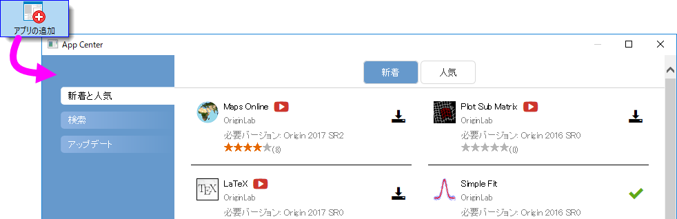
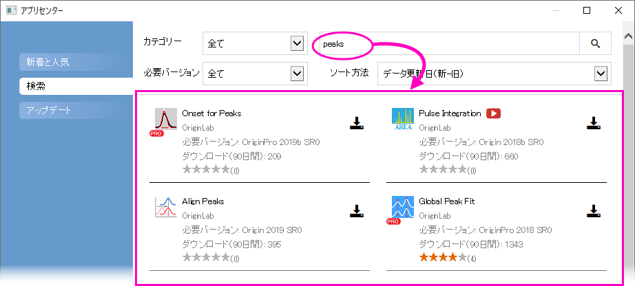
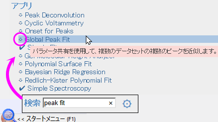
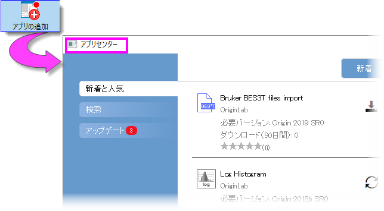
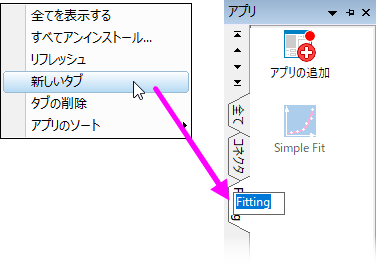
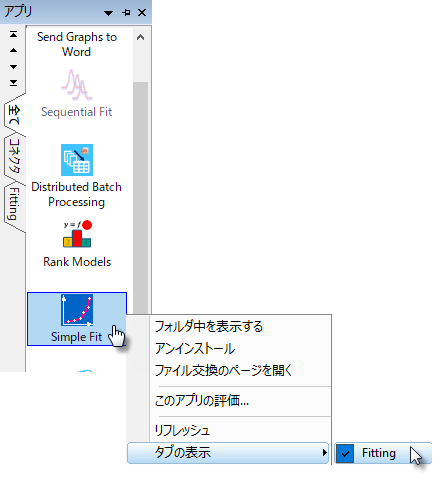
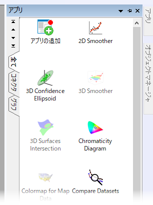
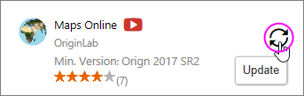
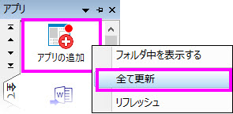
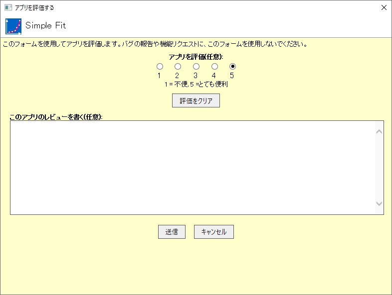

Originアプリ
アプリ
Originアプリのツールは、Originのワークシートにドロップして簡単にインストールできます。このアドオンツールの拡充により、Originのすでにあるグラフ作成と解析機能がさらに便利になっています。
アプリは、特定の問題を解決するための自己完結型で、簡単に配布できるツールであるため、新しいOrigin製品のリリースを待つ必要なく、迅速に開発して配布することができます。さらに、Originの基本的なプログラミングの知識があれば、だれでもアプリを開発することができ、社内やユーザ同士でツールを共有できる点も便利です。
現在、すべてのアプリは無料でダウンロードできます。一部のアプリにはOriginProが必要です。これらは、アプリの説明で のシンボルが表示されています。
のシンボルが表示されています。
アプリはどこにありますか？
アプリは、OriginLab社Webサイトのファイル交換の場にあります。Webブラウザを使用してファイル交換の場からアプリをダウンロードすることもできますが、Originソフトウェア上のアプリセンターからアプリを入手して管理する方が簡単です。
新しいアプリの参照およびダウンロード、アプリ検索、既存のアプリ更新、アプリのリクエストあるいはOriginLab Webサイトからアプリを送信するなど、アプリセンターひとつでアプリの管理が可能です。
アプリセンターを開くには、アプリギャラリーのすべてのタブに表示されるアプリの追加ボタンをクリックします。

アプリセンターの見方：
- インストール済のアプリに最新バージョンアイコン
 が付いていたらそのアプリは最新版です。
が付いていたらそのアプリは最新版です。
- ダウンロードとインストールアイコン
 は、まだインストールされていないことを示します。このアイコンをクリックするとインストールできます。
は、まだインストールされていないことを示します。このアイコンをクリックするとインストールできます。
- アップデートアイコン
 は、そのアプリの利用可能なアップデートがあることを示しています。このアイコンをクリックするとアップデートできます。
は、そのアプリの利用可能なアップデートがあることを示しています。このアイコンをクリックするとアップデートできます。
- 新着と人気タブで、利用可能なものを簡単に確認できます。アプリのダウンロードと更新
- 検索タブではカテゴリーや必要バージョンでアプリを検索できます。アプリのダウンロードと更新
- １つ以上の更新できるアプリがある場合には、アップデート タブに赤い丸印が表示されます。改善とバグ修正についてもそれぞれリスト表示されます。
1.1 解析及び統計メニューからアプリを探す
Originのメインメニューからアプリ検索...をクリックして、特定のアプリを検索することができます。
これらメニューコマンドでアプリセンターの検索 タブが開き、OriginLabのファイル交換の場から利用可能な関連アプリのみが表示されます。各アプリのダウンロードとインストールボタンをクリックしてインストールします。
- 
どのようにアプリをインストールしたらよいですか？
アプリセンターダイアログのDownload and Installボタンでインストールを行う場合は、他の操作は不要です。アプリは自動でダウンロードされ、インストールまで完了します。アプリのアップデートが利用可能になった場合、アプリセンターの更新ボタン を使用して、インストール済みアプリのアップデートが可能です。
インターネット接続がない場合
インターネットに接続していない場合、インターネットを利用できる他のPCで、アプリをOriginLab社Webサイトのファイル交換の場からUSBメモリ等にダウンロードし、作業PCでアプリをインストールします。
- インターネット接続のあるPCにて、ブラウザで、originlab.com/fileExchangeを開きます。
- アプリのリストから、各アプリの説明とダウンロードのページを開き、Download Fileボタンをクリックして、ファイルをUSBメモリ等にコピーします。
- 作業PCに戻り、USBメモリ等を接続してOriginを起動します。Windowsエクスプローラを開き、USBメモリ等を参照して、アプリのファイル(拡張子.opx)を、Originのワークスペース内にドラッグ&ドロップします。「管理者として実行」で起動したOriginではドラッグ&ドロップ操作ができないので注意してください。アプリがインストールされ、Originワークスペースの左側にあるアプリギャラリーにアプリのアイコンが表示されます。
ご不明な点がある場合は、アプリの説明とダウンロードページのDownload Fileボタンの下にあるHow to Installのリンクをクリックしてください。

スタートメニューからアプリを探す
スタートメニューから直接アプリを検索してダウンロード可能です。

どのようにアプリを実行したらよいですか？
- インストールしたアプリは、デフォルトでOriginワークスペースの右端にドックされているアプリギャラリーに表示されています。
- アプリの操作はウィンドウ固有です。アプリが薄い色（灰色）になっている場合、アプリは、アクティブウィンドウで操作できません。必要なウィンドウタイプをチェックしてください。（アプリギャラリーでアプリのアイコンの上にカーソルを合わせて確認できます。）
- Originのウィンドウタイプ（ワークシート、グラフ、など）がアプリと一致すると、アプリギャラリーでアプリをダブルクリックして、アプリを起動できます。
- アプリをツールバーボタンから起動したい場合、カスタマイズダイアログボックス（表示: ツールバー）を使用します。ボタングループタブのグループでアプリを選択し、表示されたボタンをOriginのワークスペースまたは既存のツールバーにドラッグします。ダイアログボックスを閉じます。
- 特別な利用方法についての記載は、それぞれのアプリの説明とダウンロードページにあります。
アプリの管理
アプリセンターをアプリギャラリーと組み合わせて使用してアプリを管理できます。
- 上述のアプリセンターを使用して、アプリの追加および更新、アプリの検索、アプリのリクエスト、アプリの評価の送信ができます。
.アプリセンターを開くには、アプリギャラリーのアプリの追加ボタンをクリックします。
- 
- ギャラリーにタブを追加してアプリを管理します。ギャラリーの空白部分で右クリックして、新しいタブを選択します。デフォルトのタブ名の上でダブルクリックして、使いやすいタブの名前に変更します。
- 
- アプリアイコンの間隔...
- すべてアンインストール...
- リフレッシュ
- 新しいタブ
- コネクタアプリを表示
- 他のタブのアプリも表示
- アプリのソート (アルファベット順、最新のインストール、最近使用したもの)
- ギャラリー内のアプリアイコンを右クリックしてショートカットメニューから選択することで、多くのアプリ固有のアクションを実行できます。
- 
- フォルダ中を表示する: アプリがインストールされている\AppData\Local\OriginLab\Apps\フォルダを開きます。
- アンインストール: 選択したアプリをアンインストールします。
- ファイル交換のページを開く: OriginLabのファイル交換のアプリの詳細とダウンロードページを開きます。
- フィードバックを送信...: 評価ダイアログボックスを開き、評価を送信できます。
- 全てを表示する:（ユーザが追加したタブのみ） 全てのアプリをアクティブタブに表示します。
- リフレッシュ: タブ表示をリフレッシュします。
- タブの表示: どのタブにアプリを表示するのかを指定するため、アプリの横のチェックマークを付けたり外したりします。
アプリセンターの更新
アプリの新しい/更新バージョンは、OriginおよびOriginProユーザーが継続的に利用できます。F10キーを押してアプリセンターを開いてください。赤い今すぐダウンロードボタンが表示されている場合は、クリックして利用可能なアプリの最新リストを取得してください。

ギャラリーのドッキング
デフォルトでは、ギャラリーはワークスペースの右側にドッキングされています。
- 
ワークスペースの上部のツールバーの下にドッキングできるようになりました。
- タイトルバーをワークスペース上部にドラッグします。ワークスペース上部に表示されるドッキングボタンにドロップするとドッキングされます（下図参照）。
- ドッキングされたら、必要に応じてウィンドウの下端をドラッグしてサイズを変更します。

アプリのアップデートが可能なとき、その通知を受け取れますか？
アプリのアップデートが利用可能なときには、いくつかの方法で示されます。
- アプリのアップデートがあると、アプリギャラリー(ワークスペースの右側にドッキングしています)のアプリの追加アイコンの右上に赤の丸印が表示されます。さらに、アップデートが可能なそれぞれのアプリアイコンにも赤い丸印が表示されます。
-

- アプリセンターでは、「アップデート」アイコンが表示されます。
- 
- アプリセンターのアップデートタブに、アップデート可能なアプリの数を示す赤いアイコンが表示されます。このタブには更新されたアプリがリストされ、各アプリまたはすべてのアプリのアップデートを適用できます。
-
アプリのアップデート方法
- アプリセンターでは、アプリの横のアップデートアイコンをクリックします。
- アプリギャラリーでアプリを右クリックして、アップデートを選択します。
- アプリセンターのアップデートタブで、すべて更新を選択します。または、各アプリの「Update」アイコンをクリックします。
- アプリギャラリーでアプリの追加アイコンを右クリックして、すべて更新を選択します。
- 
 | アプリギャラリーのアプリにカーソルを合わせて、インストールしたアプリのバージョンを変更できます。
|
アプリをアンインストールする方法は？
アンインストールの方法は簡単です。アプリギャラリーにあるアプリのアイコンを右クリックして、アンストールを選択します。

アプリについてのフィードバック方法は？
OriginLabは、お客様からの声をもとにソフトウェア製品の改善を行っています。アプリギャラリーのアプリアイコンを右クリックしてこのアプリを評価を選択するとアプリの評価を送れます。是非ご協力ください。
- 
アプリをリクエストできますか？
アプリはOriginのプログラミングの知識があればだれでも開発できます。また、プログラミングはできなくても、Originにはない機能をリクエストしたい場合、OriginLabのウェブサイトを通してアプリをリクエストすることができます。OriginLabは継続的に新しいアプリを開発し、「ファイル交換の場」にアップロードしています。
- アプリをリクエストするには、アプリセンターを開き、ダイアログボックスの左下隅にあるアプリのリクエストボタンをクリックします。すると、www.originlab.comのページが開きます。
- 何に関するご質問でしょうか?で、Request an Appを選択します。
- フォームを入力し、ページの下にあるSubmit Inquiryをクリックしてください。